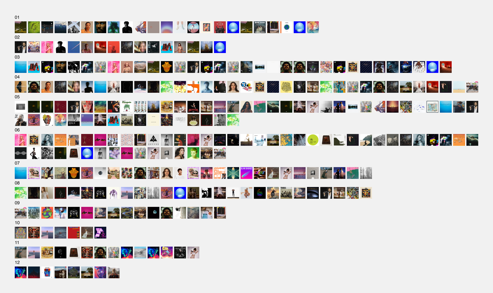

"One of the most significant design principles is to omit the unimportant in order to emphasize the important." — Dieter Rams
This is the unimportant stuff. The unprofessional, unfinished stuff.
Design may omit them, but stories rely on them. They add texture to stories.
I hope this tells you a better story about me.
2022
A playlist I made featuring songs that feel like they should be in a Shrek film, but aren't.
I made the playlist artwork by giving the prompt "Shrek wearing a Shrek mask" to an AI image generator.
The marriage of Aritzia’s acronym culture and my own recent infatuation with solving NYT crossword puzzles. Crafted painfully by hand.
I (inclusively) built a Figma and Excel version of the puzzle, then dropped it on my team as a surprise contest. It was fun.
Inspired by childhood boy scouts, I made these badges for a bachelor party camping weekend. Attendees were awarded them for completing games and challenges.
I also provided hats so everyone could proudly pin their achievements. I designed the pins in Figma, cut them out by hand, laminated them, and glued a clothing pin to the backs. Surprisingly high quality finish.
A hobby I’m practicing more is cooking, as well as a derivative hobby of plating.
Very few activities are as multi-sensory as enjoying a meal. One eye sees, the other eats.
2021
I branded a taco truck in my hometown of Creston, BC. The aesthetics are inspired by old mexican posters, but the brand is truly a reflection of the owners — fun, bold, and casual.
Deliverables included logo, web, menu, uniform, brand values, demographic, personality, purpose, and an affordable trailer wrap design. Entire project was about 3 weeks.
Throughout 2021, I instructed a Photoshop Fundamentals course at Capilano University, as a part of their online learning program.
Only a few students participated and it was mostly self-guided, but I supported them by providing feedback, answering questions, and grading assignments.
I made a silly little collection on Open Sea to explore how NFTs and wallets function.
Images were taken by me on an iPhone 7 around Vancouver. I charged .1 ETH for them, but nobody bought them.
2020
In March 2020, the novel coronavirus forced me, like everyone else, into an exclusively online working arrangement.
I compulsively documented the mundane moments, remote office locations, candle-lit lunchs, and zoom happy hours with a bewilderment of the time, then organized it into a 1 year recap and reflection.
Dendro is a craft brewery & kitchen inspired by dendrology - the scientifict study of trees. The graphic language was inspired by arborist and artist studios, old texbooks and field notes, and the natural beautify of the pacific northwest.
The entire project was an intimate, multi-month collaborative effort between myself, my design partner, and the business owners to manifest their identity.
The deliverables included brand principles, personas, brand voice, personality, moodboards, interior and photography direction.

Stuck in quarantine and dissatisfied with Spotify's public analytics, I started manually documenting every album I listened to at work.
During the workday alone in 2020, I listened to over 200 unique albums, mostly new releases. On an infinitely-large streaming platform, the act of documenting made me feel more intimately connected to the music, materializing the listening experience and creating a positive feedback loop — sometimes I wanted to listen simply to add to my list.
The album I played the most was After Hours by The Weeknd (7 times). The artist I played the most was Lil Uzi Vert (11 playbacks). The album I enjoyed the most was How I'm Feeling Now by Charli XCX.
Any album artwork you recognize?
I became an Are.na Premium user and immediately started using the platform to organize ideas. I used it privately for project inspiration and publically for documenting interesting themes.
In 2019, my partner Haley and I flew to Australia, purchased a camper van, departed on an 11,000km journey across the continent, from Perth to Cairns.
We compulsively filmed and photographed the journey, capturing every beautiful beach, desert, and city.
The experience taught me to how to live slowly, how to live with little, and how to live outside. The entire trip took about 2 months.
For a more compelling account of the experience, check out the highlight reel from the Western Australia leg of our journey.
My friend Brad was getting married, and I got stuck with Best Man duties. I planned a weekend in Seattle for 8 guys and created an obscene amount of games and swag.
Deliverables included custom t-shirts, a homemade scavenger hunt game, welcome cards and swag bags.
2018
When commuting to work or exploring Vancouver, I would hop on a Mobi Bike Share. I did it so frequently that I became a top rider in the city.
Mobi requested to interview me, giving me the opportunity to reflect on cycling and urban exploration.
My friend Karson was dabbling in Twitch streaming, and needed a banner and profile image for his account. His streaming personality was inspired by King Julien, the royal lemur in Dreamwork's Madagascar.
We played into this theme with a goofy graphic that paid homage to the film, while promoting his Twitch handle.
2017
My good friend Stefan was starting a window cleaning business, Rise + Shine, so I helped him get off the ground with some branded material.
The aesthetic was inspired by light refracting through a perfectly clean window, forming an inviting and playful rainbow.
Deliverables included business cards, web design, and brochure. The project took about one week.
2016
From 2015-2016, I was hired as the Design Coordinator for Embark Sustainability, a non-profit organization in Burnaby, Canada that organized environmental initiatives for Simon Fraser University.
I helped them translate a recent rebrand to all their assets, as well as produce countless social, web, and print materials to promote various events and initiatives.
The image shown is the design I made for the 2016 sustainability audit Embark performed on SFU.
In both November 2015 and 2016, I volunteered as a peer mentor to help design students participating an urban design competition in Seattle.
During the weekend-long charrette, I helped conduct an architectural tour of Seattle area spaces and buildings, as well as provide directional feedback and support for one of the teams. I also participated in final critique of the competing projects.
I enjoyed connecting with the design community, sharing my interest in urban design, and helping mentor new designers.